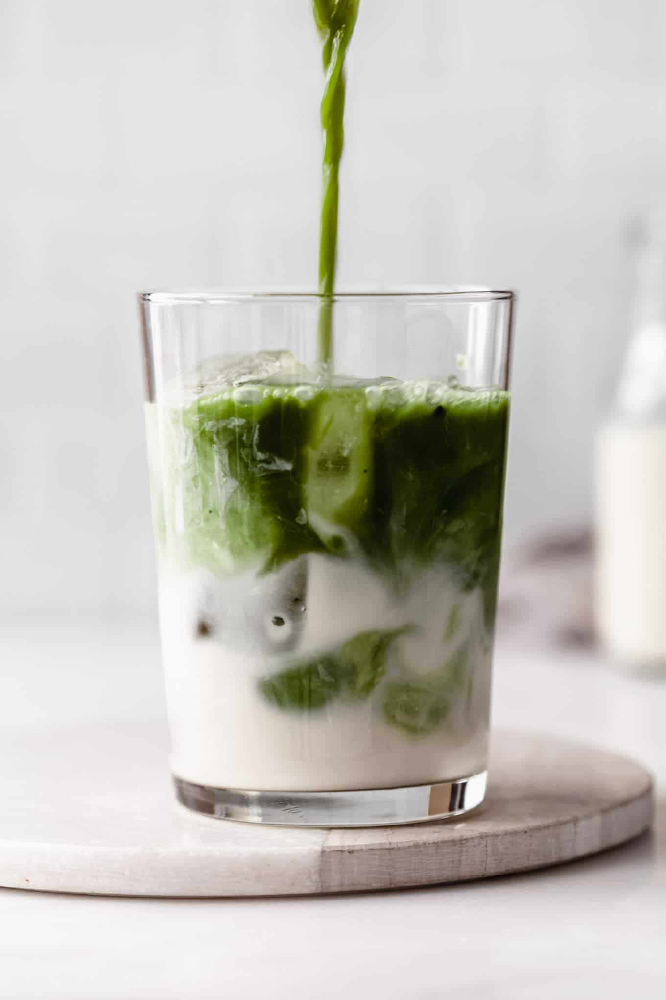

Matcha Latte Recipe

Iced Matcha Latte
Make this easy Iced Matcha Latte just like your favorite coffee shop. Matcha is mixed together with cold milk, served over ice.
INGREDIENTS
- 2 teaspoons matcha powder
- 1 to 2 tablespoons hot water
- 1 cup warm water
- Ice
- Milk of choice
Steps
- In a measuring cup or bowl, add the matcha powder.
Pour in the 1 to 2 tablespoons of hot water and whisk until the matcha has fully incorporated into the water.
This should create almost a bit of a paste.
- Pour in the remaining 1 cup of water and mix. Transfer to the fridge or freezer to chill for about 15 minutes.
- Fill two glasses full of ice and add your milk of choice so the glass is about 3/4 of the way full.
If you like, this is a great time to add any simple syrup. Lastly, pour in the chilled matcha and stir.